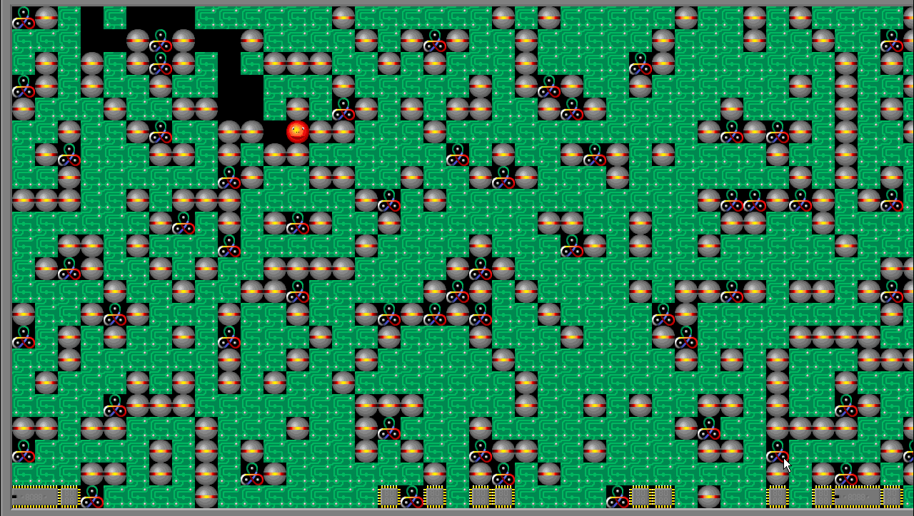

Supaplex game was so addictive, that even my mother used to play it passionately. My father did not, it was too much for him :) Anyway, game didn't just need good reflexes, like pac-mand and boulder-dash - furthermore, that was secondary. Key was using your brain to solve puzzles, find right way and save your ball. First few levels are quite easy, but, of course, they get much harder as you go on. Last few levels - well, I needed years to solve all the puzzles and complete them. Literally. That was the time before internet was widespread, so no help, no FAQ, no walkthrough - just banging your brain again and again.
For example, above level is actually 4-th in the game. And it is quite easy, although it does train your nerves quite well - any mistake and you start from scratch. That would be great for my little kid today, as he is used to Dragon Mania Legends and simillar stuff...
Because of the way game was coded, as PC progressed and became faster, gameplay also got faster. Good soul - Herman Perk recompiled the game, so it could be ran normally under new PCs - that is known as SpeedFix. Later, Megaplex appeared - which enabled to run game under Windows, even newest ones, without DOS emulators etc...
To my great dismay, I discovered that I forgot solutions for many levels. Especially few hard ones, which are already bordering with impossible. And many fan levels which appeared later - they are indeed impossible without using tricks and "bugs" of original game, known only to die-hard fans. I learned many of them only now...
Bellow is complete gameplay of all levels... Not worth actually watching, because you do better by playing it, but that cranky mellody... It still is in back of my head, even after all those years... And to the left links for downloading of old and new versions... just in case...